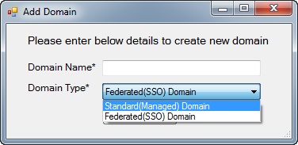

Description of the sample
Prerequisites
The following are required to be configured or installed on the computer you will use to build and run the sample:
-
Office 365 Enterprise subscription.
-
User account credentials that have at least User Management administrator privileges in the Office 365 organization.
-
Windows 7 or Windows Server 2008 R2 with Windows PowerShell installed.
-
Visual Studio 2012 including components for Windows Forms applications installed.
-
.NET Framework 3.5.1 installed and enabled in Visual Studio.
-
Microsoft Online Services Sign-In Assistant installed.
-
Microsoft Online Services Module for Windows PowerShell installed and configured as described in the following paragraphs.
To run the sample, you must enable remote control of Office 365 by performing the following steps.
Enable Office 365 remote control
-
On the desktop, locate the shortcut for the Microsoft Online Services Module for Windows PowerShell.
-
Right-click the shortcut and choose Run as Administrator.
-
Click Yes if the User Account Control dialog box opens.
-
In Windows PowerShell, run the command Get-ExecutionPolicy.
-
If the command returned RemoteSigned, your computer is already configured properly to manage Office 365 remotely by using Windows PowerShell.
-
If the command returned is not RemoteSigned (typically Restricted), run the command Set-ExecutionPolicy RemoteSigned, and then enter Y when prompted.
-
In Windows PowerShell, run the command Get-ExecutionPolicy and verify it returns RemoteSigned.
-
Close Windows PowerShell.
Key components of the sample
The sample is a Windows Forms application that contains the following:
-
A main application window that displays a grid listing Office 365 single sign-on domains associated with the organization.
-
A dialog box to enter the administrator logon credentials.
-
A dialog box to set new single sign-on domain information.
Open and build the sample
Before using the sample, you should visit the Office 365 administration portal and verify the administrator account's privileges. That account must have at least User Management administrator privileges in the organization.
-
Open Visual Studio 2012.
-
Click File, point to Open, and then click Project/Solution.
-
Navigate to the directory into which you extracted the sample files.
-
In the O365_SingleSignOn_cs folder, select O365_SingleSignOn_cs.sln, and click OK.
The sample builds and Solution Explorer opens, as shown in the following figure.

Run and test the sample
-
In Visual Studio click Run, or press F5, to build and start debugging the sample.
-
In the Enter Credentials dialog box, shown in the following figure, enter the user name and password for the administrator account, and click Login.

-
The main window opens in full-screen mode after you enter the credentials, as shown in the following figure. (Domain names are obscured in the figure.)

-
To create a new single sign-on domain, click Create Domain. The Add Domain dialog box opens, as shown in the following figure. Fill in the Domain Name field, select the appropriate Domain Type, and then click Add Domain.

-
To close the sample, click the Close button in the upper-right corner of the window.
Troubleshooting
The following table lists the common configuration and environment errors that help troubleshoot issues preventing the sample from building or deploying successfully.
|
Problem |
Solution |
|---|---|
|
The Login dialog box reports "Unable to authenticate your credentials." |
Make sure that your user name is in the format: <username>@<domain> and that your password is correct. |
|
Windows PowerShell or the application reports "The term 'Connect-MsolService' is not recognized as the name of a cmdlet, function, script file, or operable program…." |
Your user account doesn't have permission to run Windows PowerShell, or you have not installed the Microsoft Online Services Module for Windows PowerShell, or the execution policy is not set to RemoteSigned as described in the "Prerequisites" section. |
|
Windows PowerShell or the application reports "Failed to connect to Active Directory Federation service 2.0 on the local machine. Please try running Set-MsolADFSContext before running this command again." |
This error means that you have not installed and configured Active Directory Federation Services (AD FS) 2.0 to create a Federated Domain on your local machine. So install and configure AD FS 2.0 on your machine. |
Change log
|
Version |
Date |
|---|---|
|
First version |
February 28, 2013 |